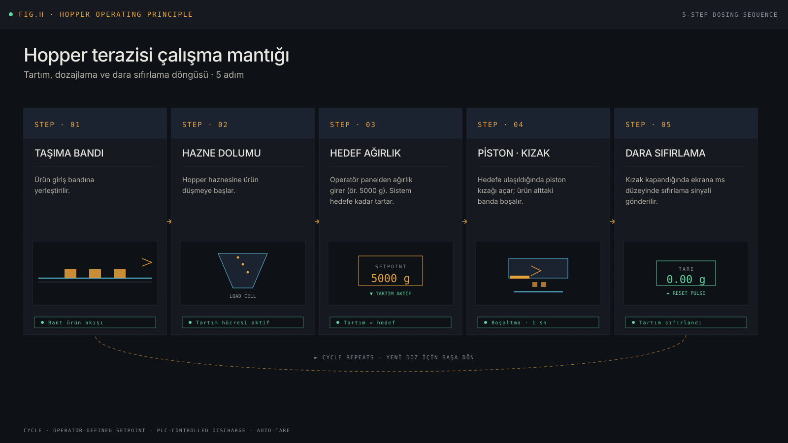
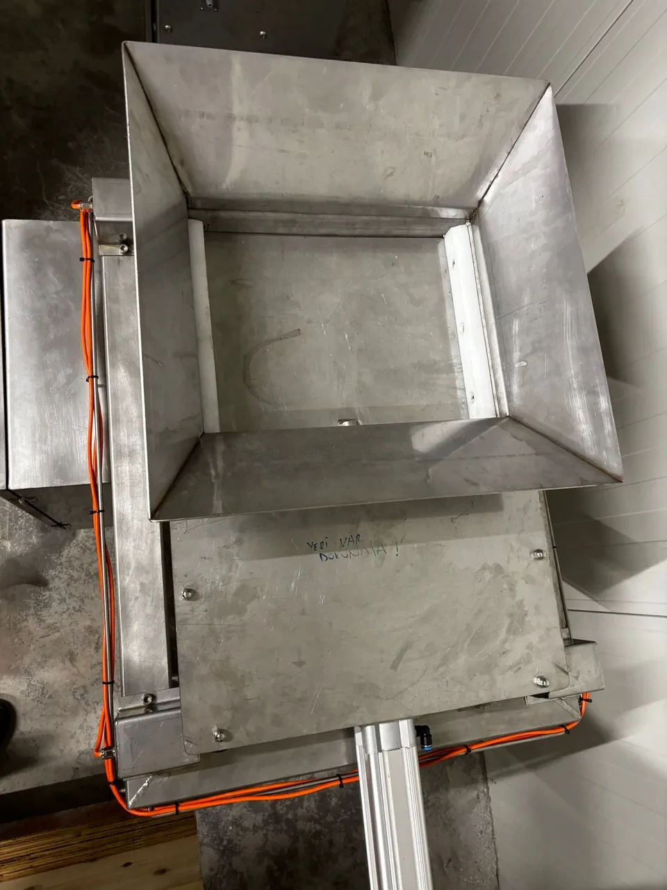
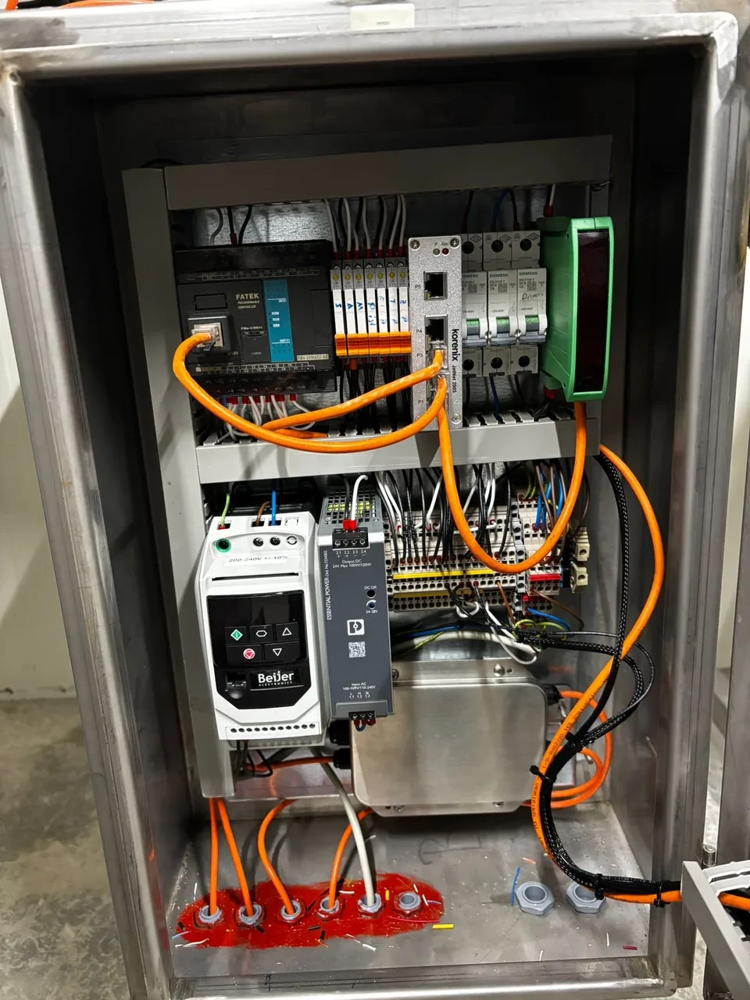
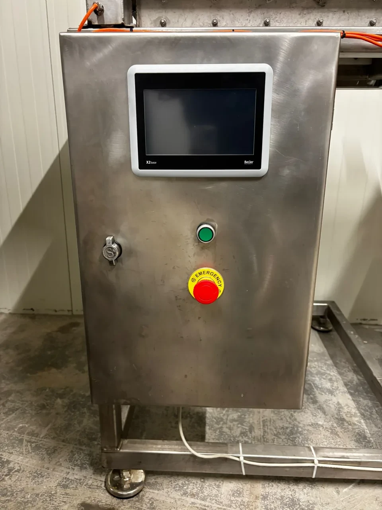

Hopper scale design and field integration
The hopper scale solution was designed to fit two production lines together — mechanical structure, operator use, control panel, and PLC logic handled as a single field problem.
Field solution
The weighing process needed to become more controlled across two separate production lines and more manageable for the operator. The solution was set up not just as a mechanical assembly, but together with field use and control logic.
The Fatek PLC, operator panel, field elements, and control panel were planned as a single system. Assembly, panel layout, operator access, and field connections progressed with the production flow in mind.
Operating principle
The system operates as a 5-step cycle: product falls from the conveyor into the hopper; the load cell weighs up to the operator-defined setpoint; when the target is reached, a piston opens the slide and the product discharges to the lower belt; when the slide closes, a millisecond-level reset signal is sent to the panel so tare is auto-cleared.

Tools and components
Field views



